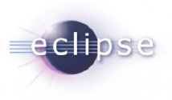
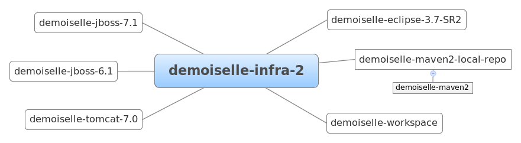
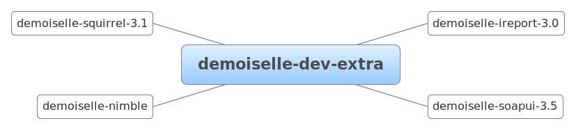

O metapacote Demoiselle Infra 2 foi criado para a versão 2.x do Framework Demoiselle.
Os pacotes de software disponibilizados pelo Demoiselle Infra 2 estão agrupados logicamente em
Adicionalmente são oferecidos os metapacotes, os quais automatizam a instalação de múltiplos pacotes com funções em comum.
Estão disponíveis aqui os principais ambientes de desenvolvimento integrado (IDE) prontos para uso com o Demoiselle.
O Eclipse é um ambiente de desenvolvimento altamente plugável e de código aberto mantido pelo grupo Eclipse
O pacote demoiselle-eclipse-3.6 embarca a IDE Eclipse 3.6.1 (Helios) com os seguintes plugins configurados:
O pacote demoiselle-eclipse-3.7 embarca a IDE Eclipse 3.7.1 (Indigo) com os seguintes plugins configurados:
O pacote demoiselle-eclipse-3.7-SR2 embarca a IDE Eclipse 3.5.2 (Indigo) com os seguintes plugins configurados:
Aqui você encontrará a lista de todos os servidores disponíveis no ambiente Demoiselle Infra, tais como Application Servers, Web Servers e Servlet Containers.
Famoso servidor de aplicação de código aberto conhecido como JBoss AS do grupo JBoss
As versões do JBoss AS distribuídas pelo Demoiselle Infra são:
O Tomcat é um Servlet Container de código aberto da fundação Apache
Todos os pacotes aqui descritos são opcionais para a preparação do ambiente de desenvolvimento.
Ferramenta bastante utilizada pelos programadores Java para criar relatórios para suas aplicações.
Automatizador de build e gerenciador de dependências de projetos Java.
Repositório Maven local contendo diversos artefatos comumente utilizados pelos projetos baseados no Demoiselle Framework.
Provê uma interface prática para acessar Web Services. Muito útil para testar serviços.
Use o SQuirreL para executar comandos, fazer consultas e gerenciar as estruturas dos bancos de dados de sua aplicação.
Criador de workspaces pré-configurados. Com este shell script você poupará tempo de configuração do Eclipse referente à servidores, ferramentas externas, formatação de código, dentre outros.
O Demoiselle Nimble é um processador automatizado de templates, sendo estes genéricos e podendo inclusive ser criados pelo próprio utilizador. Podemos considerá-lo como uma evolução da ferramenta Demoiselle Wizard Eclipse Plugin que como o próprio nome já diz é um especificamente um plugin para a IDE Eclipse leia mais a repeito do nimble no Guia do Usuário.
Uma opção prática para instalar o ambiente completo é utilizar os metapacotes, que são agrupamentos de pacotes.
Pacote que instala o ambiente de desenvolvimento com a IDE Eclipse, Maven, Servidores Tomcat e JBoss e o script demoiselle-workspace
Pacote que instala ferramentas adicionais para o ambiente de desenvolvimento.
